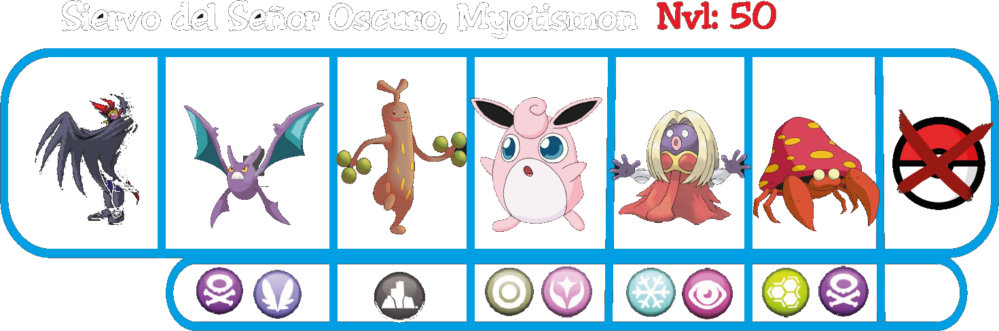
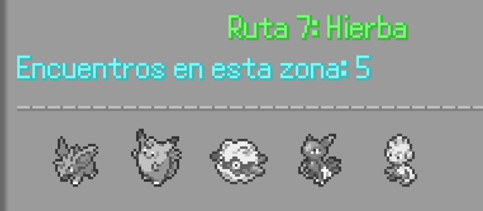

Autopista
En la autopista encontrarás muchos entrenadores, pero tan solo después de haber aceptado la misión de Yachiru. También encontrarás la Casa de Mentas si cruzas la autopista por la playa, las mentas son una buena forma de fortalecer a tus Pokemoitos.
Después de comprar las mentas que necesites, baja por la autopista hasta llegar a la Autopista Sur, donde tendrás un encuentro con una extraña criatura.
Metalgreymon en su forma neutra.
Dependiendo de si hiciste que tu compañero tomase su forma oscura o no, cambiará el diálogo.
Metalgreymon en su forma oscura.
Pero en cualquiera de los casos, Myotismon volverá a aparecer matando al pequeño antes de que te cuente todo lo que sabe, esta vez vendrá con un equipo Pokemoito, para luchar contra ti como entrenador.
Cuando hayas ganado a Myotismon, ocurrirán cosas distintas dependiendo de la oscuridad de tu compañero. Si convertiste a tu compañero a su versión oscura, este directamente matará a Myotismon, sin esperar tu respuesta.
En cambio, si tu compañero sigue sin estar corrompido, tendrás la opción de perdonar la vida al enemigo o ejecutarlo, siendo esta última opción la que forzaría la transformación oscura.
La oscuridad rodeando a Metalgreymon después de ejecutar a Myotismon.
Después de derrotar a Myotismon, podrás entrar al Pueblo Torrijas, pasando primero por la pequeña ruta 7 en la que también podrás capturar y coger un objeto oculto.
